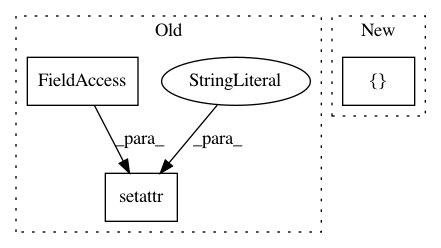

0b77df59635715ac4538e35ed2257f1d3dba8d83,http_service/tests/conftest.py,,mock_repo,#Any#Any#,212
Before Change
monkeypatch.setattr(bugbug_http, "REPO_DIR", str(repo_dir))
// Silence the clean method
monkeypatch.setattr(bugbug.repository, "clean", lambda repo_dir: True)
// Create the repo
hglib.init(str(repo_dir))
After Change
with hglib.open(str(remote_dir)) as repo:
remote = remote_dir / "remote.txt"
remote.write_text("New remote file !", encoding="utf-8")
repo.add([str(remote).encode("utf-8")])
repo.commit("Pulled from remote", user="bugbug")
return local_dir, remote_dir
In pattern: SUPERPATTERN
Frequency: 3
Non-data size: 3
Instances
Project Name: mozilla/bugbug
Commit Name: 0b77df59635715ac4538e35ed2257f1d3dba8d83
Time: 2020-03-11
Author: babadie@mozilla.com
File Name: http_service/tests/conftest.py
Class Name:
Method Name: mock_repo
Project Name: Calamari-OCR/calamari
Commit Name: ec580f731f950fc69377ae1de19ebaa445300991
Time: 2021-01-23
Author: wick.chr@gmail.com
File Name: calamari_ocr/scripts/experiment.py
Class Name:
Method Name: run_for_single_line
Project Name: IBM/adversarial-robustness-toolbox
Commit Name: 2863f921ec0eeff3b3f3b65d48978569f670bdc7
Time: 2020-01-21
Author: kheykholt@gmail.com
File Name: art/attacks/attack.py
Class Name: input_filter
Method Name: __init__